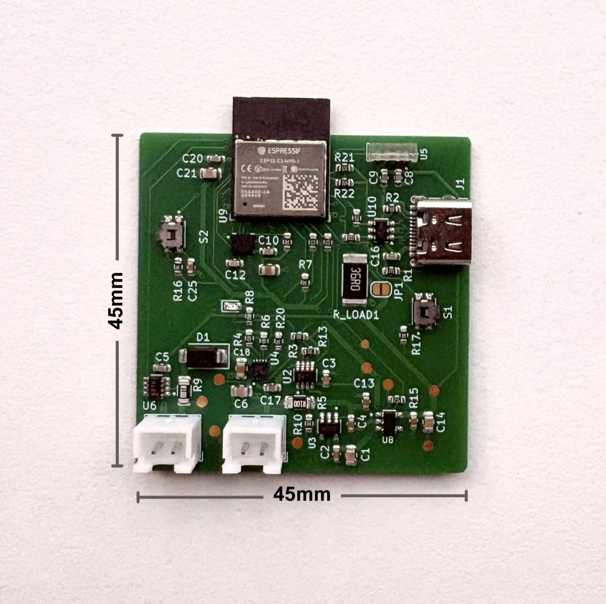
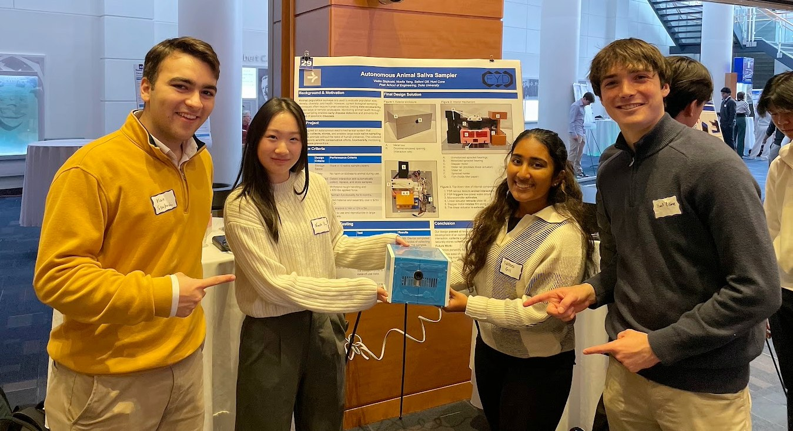

Projects
A growing collection of things I have designed, built, tested, and learned from. Click a project to read more.

Adaptive Power Management Testbed & PCB
A custom ESP32-C3 board with solar input, Li-ion charging, dual current monitors, and a switchable sensor rail, built as a spacecraft-style power management testbed and validated subsystem by subsystem.

Lighting Up Canada Data Pipeline
A summer software and systems internship at Plant-Based Cities Movement, building the review backend, reviewer web app, and research workflow behind a public map of sustainability initiatives.

Autonomous Animal Saliva Sampler
A first year design project: an event-driven device that detects an animal's contact, collects a saliva sample, and stores it, no human required.